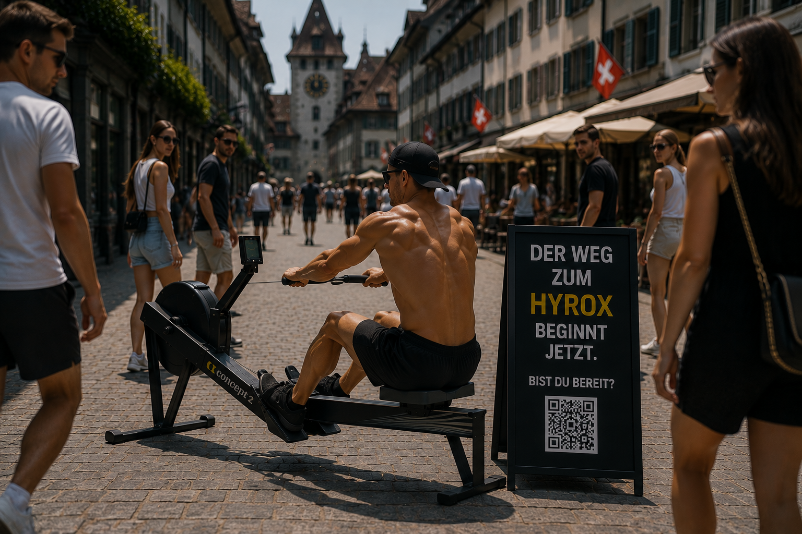
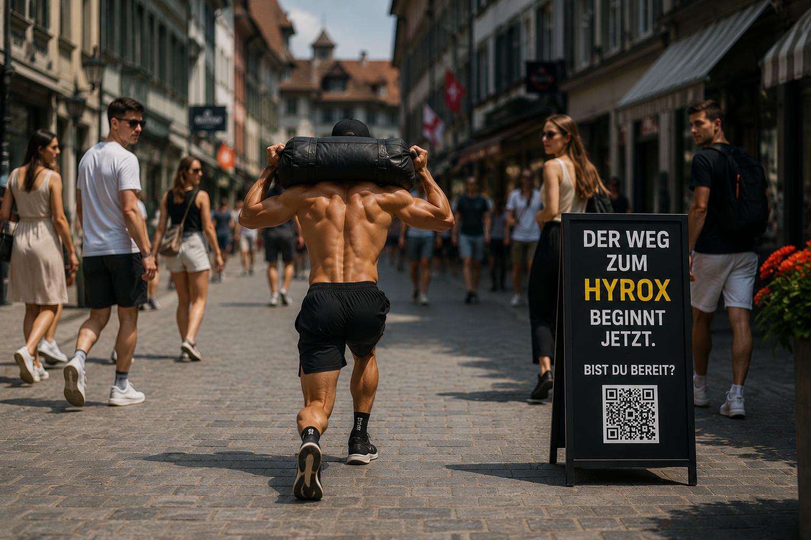
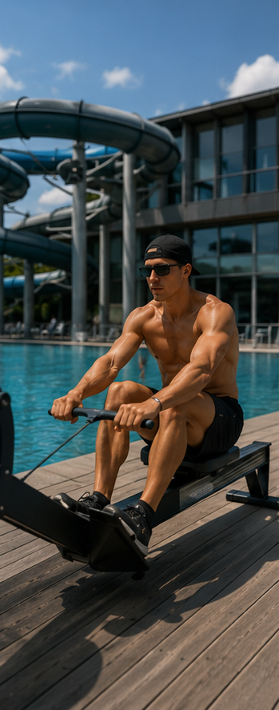
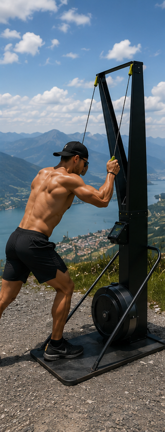
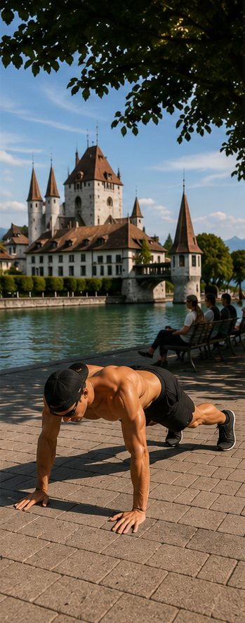
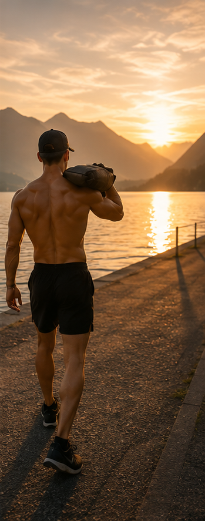
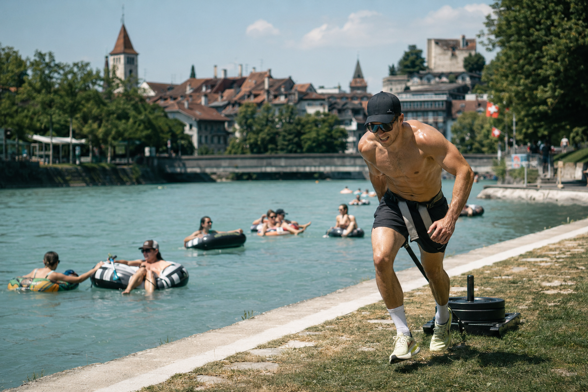

Der Wettkampf hat keine Startlinie mehr — er steht plötzlich mitten in der Thuner Altstadt. Eine Guerilla-Video-Serie, die echte Passanten-Reaktionen zu Content macht, der sich von selbst verschickt.
Kein Werbe-Look, kein Hochglanz-Intro — genau das macht den Moment glaubwürdig, bevor der Kontext-Bruch kommt und klar wird, was hier eigentlich abgeht.

Statt eines weiteren gestellten Fitness-Reels stellen wir echte Hyrox-Stationen — Rudern, Sandbag-Carry, Sled, Ski-Erg — mitten in den ganz normalen Thuner Alltag: Altstadt-Gasse, Freibad, Seeufer, Aussichtspunkt. Kein Green Screen, kein Cast. Nur ein Athlet, ein Gerät, echte Passanten — und eine Kamera, die die Reaktionen einfängt.
Das Ergebnis ist kein Werbespot, sondern ein Moment, den Leute anhalten, zurückspulen und an drei Leute weiterschicken, mit der Nachricht: „Was geht hier ab, ahahaha.“ Genau dieser Reflex ist die Kampagne.
Immer dieselbe Person (Cap, Sonnenbrille, schwarzes Outfit) — baut über die Serie eine Figur auf, die man wiedererkennt: „Der Typ schon wieder?!“
Passanten wissen nichts vom Dreh. Ihre Blicke, Lacher und Handy-Stopps sind der eigentliche Inhalt — 100% authentisch, 0% Schauspiel.
Ein simples Schild mit QR-Code („Der Weg zum Hyrox beginnt jetzt“) steht immer neben der Szene — für alle, die live vorbeikommen und mehr wissen wollen.
15–25 Sekunden, Hook in den ersten 2 Sekunden, gebaut für Reels/TikTok-Autoplay — kein Intro, direkt in die Irritation.
Alle 7 Motive sind bereits als Bildbeispiele produziert.
Ein Rudergerät steht auf dem Kopfsteinpflaster der Rathausstrasse, direkt vor dem Wahrzeichen-Turm. Der Athlet rudert, als wäre das völlig normal — Touristen schlendern irritiert vorbei.
Maximaler Kontext-Bruch: Fitnessgerät + Fussgängerzone erzwingt Anhalten und Filmen. Die Passanten liefern den Hook, nicht das Skript.

Statt Einkaufstasche trägt er einen schweren Sandbag huckepack durch die enge Gasse, vorbei an Café-Terrassen — wie ein ganz gewöhnlicher Feierabend-Nachhauseweg.
Baut die Wiedererkennung der Serie auf: „Ist das wieder der Typ von Video 1?“ Zweit-Content, der Zuschauer aktiv auf die nächste Station warten lässt.

Rudergerät direkt am Beckenrand des Strandbads — während alle anderen im Hintergrund entspannt schwimmen oder rutschen, zieht er seine Schläge.
Der Sommer-Kontrast „alle chillen, einer trainiert“ ist eine visuelle Pointe, die als Meme-Format 1:1 weiterlebt und geteilt wird, ohne Kontext zu brauchen.

Auf einem Hügel über Thun, Schloss und See im Hintergrund, zieht der Athlet an einer Ski-Erg-Station — reinstes Schweizer Postkartenmotiv trifft auf Höchstleistung.
Höchster Screenshot-Wert der Serie — die Ästhetik allein sorgt für Saves und Feed-Posts, unabhängig vom Überraschungsmoment.

Direkt an der Aare vor dem Schloss Thun, wo Touristen ihre Ferienfotos schiessen, wirft sich der Athlet mitten ins Bild in Burpees und Liegestütz-Sprünge.
Er „stört“ fremde Ferienfotos auf möglichst absurde Weise — dieser Fremdscham-Moment mit echten Touristenreaktionen ist Gold für internationale Reaction-Cuts.

Der Athlet marschiert mit Sandbag auf der Schulter der untergehenden Sonne entgegen — cinematisch, fast wie der Closer eines Werbespots.
Emotionaler Tonwechsel von „wtf, lustig“ zu „krass, inspirierend“ — perfekter Kampagnen-Abschluss für Story-Highlights und Ad-Retargeting.

Direkt am Ufer, wo Einheimische im Sommer mit Schwimmringen gemütlich die Aare hinuntertreiben (das legendäre Thuner/Berner „Aareschwimmen“), zieht der Athlet schweissgebadet einen Sled gegen die Fliessrichtung am Ufer entlang.
Doppelte Pointe: visueller Kontrast (Anstrengung vs. Lifestyle) und eine Metapher, die sich selbst erzählt — „während alle mit dem Strom schwimmen, geht er dagegen“. Aareschwimmen kennt in der Region jeder, das holt auch Leute ausserhalb der Fitness-Bubble ab.
2–3 Guerilla-Videos pro Woche (Altstadt, Freibad). Aufbau der Wiedererkennungsfigur, erste Kommentare & Shares, organisches Reichweiten-Testing je Motiv.
Stärkste Motive (Schloss, Aussichtspunkt, Aareufer) folgen, plus Boosting der bestperformenden Clips. QR-Kundenstopper live an mehreren Thuner Standorten.
Sonnenuntergangs-Video als emotionaler Abschluss, Countdown-Stories, Retargeting-Ads an alle, die mit der Serie interagiert haben — Push auf die letzten Tickets.
Die Serie lebt von zwei Formaten, die sich gegenseitig verstärken — plus einem festen Asset-Set, das von Anfang an organisch und paid mitgedacht ist.
Die 15–25-sekündigen Guerilla-Clips selbst — der eigentliche „wtf ahaha“-Moment. Rohe, leicht wackelige Handkamera-Optik, echte Umgebungstöne statt Musik-Overlay in der ersten Hälfte.
Ein starkes Standbild aus jeder Szene (die bereits produzierten Kampagnenbilder sind genau das), plus kurzer Text-Overlay im Sign-Stil: „Der Weg zum Hyrox beginnt jetzt.“
| Asset | Menge | Zweck | Einsatz |
|---|---|---|---|
| Guerilla-Reels15–25s, vertikal, Rohschnitt | 7 Stück (1 pro Motiv) | Reichweite, Irritation, Share-Trigger | Organisch |
| Bild-Posts mit TextStandbild + Sign-Zitat | 7 Stück (1 pro Motiv) | Feed-Präsenz, Recall, Conversion | Organisch + Paid |
| Story-Cutdowns6–9s Kurzversion | 7 Stück | Sticker/Countdown/Swipe-up-Link | Organisch |
| Reaktions-SchnittMaking-of / echte Passantenreaktionen | 1–2 Stück | Social Proof, Vertrauen, „ist das real?“ | Organisch |
| Hook-Variantengleiche Reels, andere erste 2 Sek. | 2–3 pro Top-Motiv | A/B-Testing für Media-Buying | Paid |
| Vor-Ort-KundenstopperSchild + QR-Code | 1 pro Drehort | Live-Traffic von echten Passanten zur Event-Seite | Organisch (offline) |
Richtpreise in CHF, exkl. MWST. Fokus aller Pakete: Content-Produktion & Schnitt. Vor-Ort-Kundenstopper, Media-Budget (je nach Bedarf) und das laufende Posting-Management übernimmt Hyroxthun/Crossfit Triplex — das ist nicht Teil dieses Angebots.
Schlankes Set-up für den Start: ein Drehtag mit Profi-Kamera, 5 Motive — Content & Schnitt aus einer Hand.
5 Reels, gedreht mit Profi-Kamera. Ich liefere Content & Schnitt. Kundenstopper, Media-Budget und laufendes Posting-Management übernimmt Hyroxthun/Triplex.
Alle 7 Motive, beide Formate plus Kampagnen-Zusammenschnitt — an einem gestrafften Drehtag.
Ich liefere Content & Schnitt für alle 7 Motive plus den Kampagnen-Zusammenschnitt. Kundenstopper, Media-Budget-Einsatz und laufendes Posting-Management übernimmt Hyroxthun/Triplex.
Alles aus Bulk, plus komplette Event-Tag-Abdeckung mit 2 Personen vor Ort: Action-Fotos, Aftermovie und Interview-Reel.
Deckt die ganze Kampagne und den Event-Tag selbst ab (2 Personen vor Ort) — inkl. Aftermovie mit Sponsoren-Einblendungen als bleibendes Asset für nächstes Jahr.
Für eine lokale Simulations-Veranstaltung dieser Grösse liefert bereits Shred den eigentlichen viralen Mechanismus — der Kontext-Bruch in den Reels funktioniert unabhängig vom Media-Spend. Der Schritt zu Bulk kostet nur CHF 400 mehr und bringt 2 zusätzliche Motive, die Bild-Posts fürs Feed und den Kampagnen-Zusammenschnitt gleich mit — bei dieser kleinen Differenz spricht wenig dagegen. PR lohnt sich, sobald der Event-Tag selbst als Content festgehalten werden soll: Aftermovie und Sponsoren-Sichtbarkeit sind oft genau das, was Sponsoren fürs nächste Jahr überzeugt, und die 2 Personen vor Ort ermöglichen Fotos und Interviews gleichzeitig, ohne dass etwas verpasst wird. Der grösste Hebel, wenn zusätzliches Budget vorhanden ist, ist unabhängig vom Paket ohnehin nicht mehr Produktion, sondern in den letzten 2–3 Wochen vor dem Event gezielt ein kleines Media-Budget auf die 1–2 stärksten Reels zu legen, um die Ticket-Deadline zu pushen.
Zur Einordnung, kein Hyrox-Thun-Material: ein Aftermovie aus einer früheren Produktion (EC Davos) als Beispiel für Schnitt-Tempo, Bildsprache und wie Sponsoren-Einblendungen wirken. Für Hyrox Thun entsteht ein eigenes, komplett auf euer Event zugeschnittenes Video im PR-Paket.
Referenzarbeit „EC Davos Recap“ · 60s · zeigt Schnittstil & Sponsoren-Platzierung, nicht den finalen Hyrox-Thun-Look.